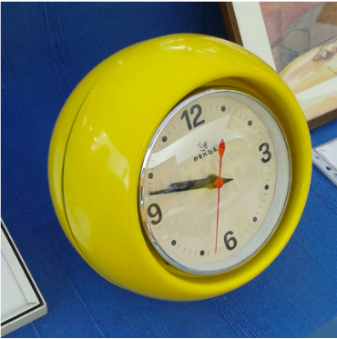
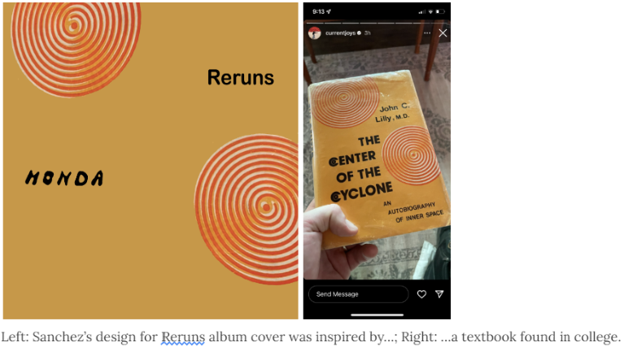

World Problems
Interview on a Person’s Hobby: Brandon Sanchez
Author Jeremy Tolentino
For some people, their hobbies may change depending on their life experiences. They may be into embroidery for a few years but then change to masonry the next. But for Brandon Sanchez, his hobby has remained the same ever since high school: Graphic Design. As stated before, Sanchez’s interest in this hobby first developed in high school since it provided him a lot of references to use for the low price of nothing. Books, clothing, school events, and plenty of resources came his way and inspired him to create designs. He’s created plenty of designs since then and may even develop a career from his hobby.
With how little the limitations are to graphic design, the years Sanchez spent perfecting his hobby caused a new mentality to form. His new mindset was this:
No idea was truly original.
Everything people made, whether it be music, designs, or even our own ideas, are not truly original. Whether we like it or not, everything that exists in the world is based on a previously existing thing.
This new mindset allowed his ideas to expand and caused him to create the pieces he finds to be perfect. One of them is an album cover for Monda’s album “Reruns”. He created the cover by basing it off of a textbook he found called ”The Center of the Cyclone”. Another one of his favorite creations is a design called “Where did the day go”. The basis for this piece was simply a shirt with the word “go” written on it three times. To some, they may seem simple, but the greatest creations can come from a simple idea.
Sanchez also wanted to include a tip for anyone who wants to go into Graphic Design:
“Be sincere but explanations have no meaning”.
He wants those who are trying Graphic Design for the first time to know that you should be honest with your work but you shouldn’t have to explain everything. It doesn’t matter if others don’t like your work. All that matters is whether you are satisfied with the end result. If you aren’t, then it isn’t honest work. Your work also shouldn’t need an explanation behind it. You don’t have to go into depth on why you made something or your thinking process when designing something. If you want to design something from a random spark of inspiration, then just go for it. In Graphic Design, there are no limits to what you can make. Let your creativity take control and design to your heart’s content.